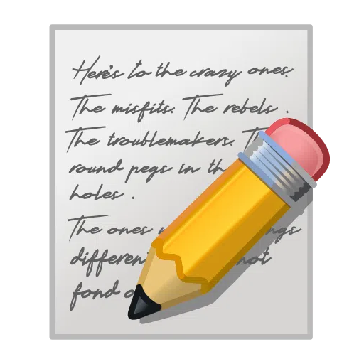

性别不平等仍然是一个巨大挑战。
-

前言
我们深知“放大弱者的声音”的重要性。因此，只有认真倾听、仔细清点、深入了解才能帮助在边缘化的多元群体表达出他们的真实需要。
在本次调查前，我们检索了中国有关多元性别的各类报告，其中社会歧视调研和艾滋病调研居多，其次是少数群体的生活和心理状况。
没有数据和记录，类似多元性别的群体就更易被忽视。为了填补此空白，我们面向所有群体发起问卷调查，希望能以此为起点，反应多元性别群体的状况，以及多元群体在接受治疗时遇到的障碍。
我们会将数据披露至WHU、中国人民大学与性别研究会、GLAAD、彩虹中国。感谢Matthew Wilkas提供支持。
公开自己的性取向可能是危险的，我们尊重您的想法。
-
期待您能参与此次问卷调查
前往
发现更多
GLAAD
GLAAD YouTube